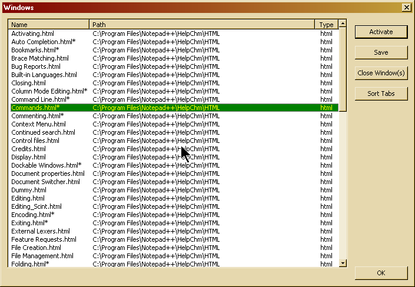

The Window menu allows you to select a file from the list of the first 10 open documents in the active view (see also Multi View). Selecting a document from the list will activate it. p>
You can open the Windows dialog by selecting . The Windows dialog allows you to manage all the currently open documents of the activate view.
The Windows dialog shows a list of all the open documents in the active view. You can select one or more documents from the list. Like any Windows list control, select multiple by dragging during clicking with your mouse, or by pressing Ctrl or Shift when selecting by clicking. Or use the arrow keys on your keyboard optionally with the Ctrl or Shift key depressed (if you do so, use the spacebar key to select).
Selecting one allows you to activate it by clicking on the button. This will close the dialog.
Selecting one or more allows you to click on the button, this will perform the Save operation if possible on all selected documents (if a Save As.. operation is needed, nothing will happen (see File Management, Opening and Saving)).
Selecting one or more also allows you to close those documents by clicking on . If a document contains any changes, you will be asked if you want to save them.
To sort the documents using the dialog, first sort the list by selecting one of the column titles in the top (selecting twice inverts the sort order). After doing so, select to sort them, the documents will be rearranged in the view.
Click to close the dialog.